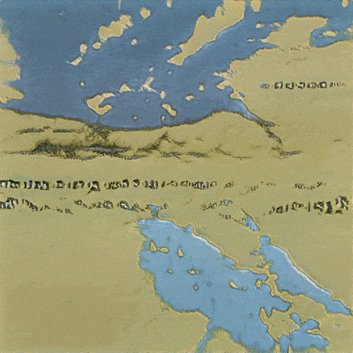
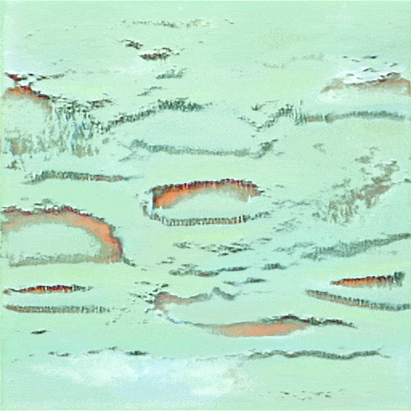
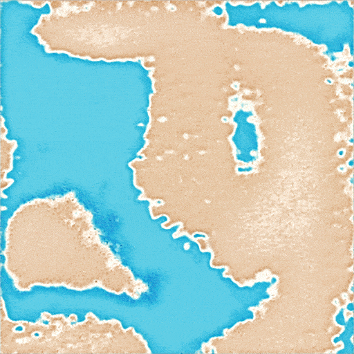

Work
Software, product development, teaching and research focused on useful digital services.
- Programme information systems: product ownership & delivery.
- Teaching and learning tools: Python, data and AI literacy.
- Digital health research: responsible, citizen-centered technology.



danube deep explored the Danube's past, present and possible futures through art, maps and collaboration between people and AI. Developed at the University of Applied Arts Vienna during Cross-Disciplinary Strategies studies.
Reference: Decontain Collective. (2022, January 13). danube deep. https://decontaincollective.uni-ak.ac.at/index.php/danube-deep/